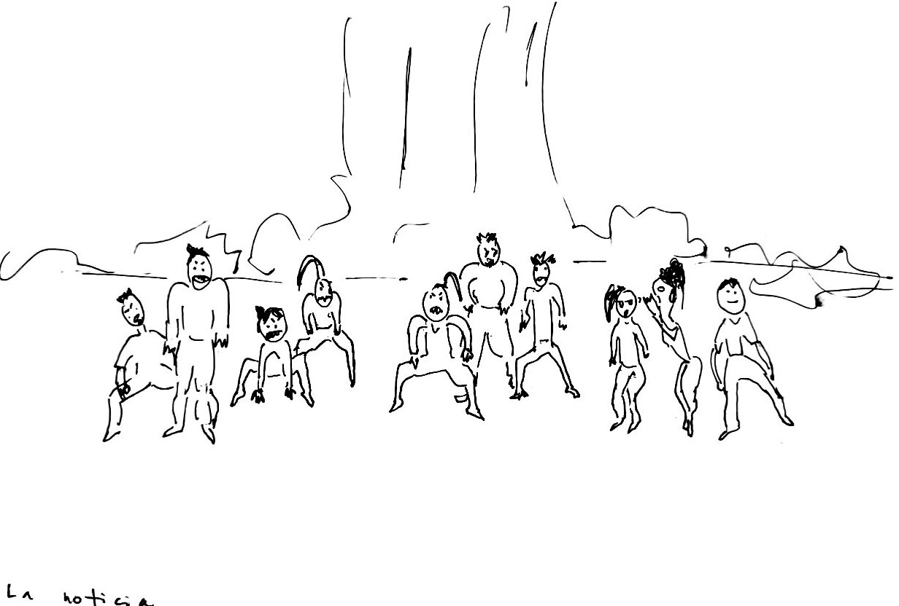

01
La noticiaPlano general · picado

Tensión“La noticia”esc. 1/3
Los felinos y el mensaje
La manada espera. Hermes trae la orden.
EmocionesAgresividad→Tranquilidad y relajo
Pautas físicasE1
- Animal
- Gato
- Tensión
- 7
PlanoGeneral, ligeramente picado, para ver a todo el grupo y el paisaje.
Acción10 intérpretes en posición de felino (cuadrupedia baja, peso adelante, cabeza en alerta). Todos miran hacia un mismo punto fuera de cuadro. Hermes entra o está en primer plano, de pie y en movimiento, y entrega un mensaje: puede ser un objeto o solo el gesto.
Composición
- Los felinos en semicírculo o en diagonal escalonada, a distintas alturas (algunos más bajos, otros con la espalda arqueada).
- Hermes rompe el patrón: es la única figura vertical.
IntenciónTensión de manada esperando una orden. El mensaje es el detonante de todo lo que sigue.
Intensidad